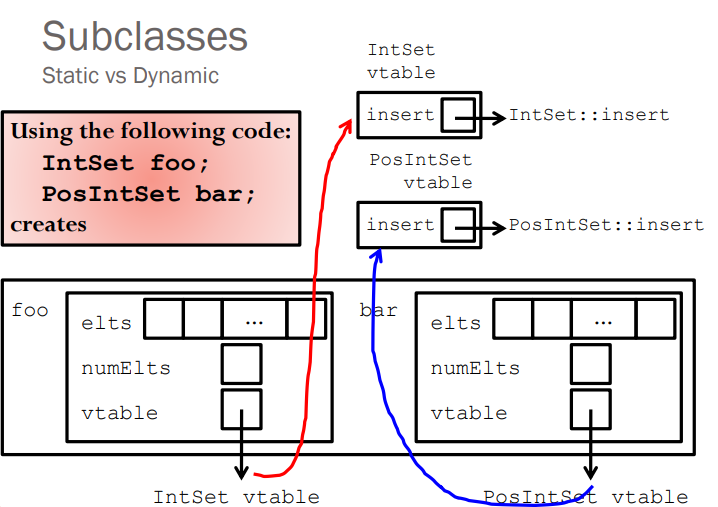

C++ and Algorithms for Interview
Small points
x++increments the value of variablexafter processing the current statement.x+=i++;additoxthen increaseiby 1.++xincrements the value ofxbefore processing the current statement.x+=++i;increaseiand addi+1tox.- Array is passed by reference.
array = &array[0]. - Reference must be initialized using a variable of the same type.
- Enumerate example:
enum Suit_t {A, B, C, D}; const string Name[] = {"A", "B", "C", "D"}; enum Suit_t x = C; std::cout << Name[x] << std::endl;
Function pointer
For functions that have precisely the same type signature, a function pointer allow us to call them the same way from a syntactic point of view.
Example:
int min(int a, int b);
// EFFECTS: returns the smaller of a and b.
int max(int a, int b);
// EFFECTS: returns the larger of a and b.
int (*foo)(int, int);
// Then we can let foo = min or max and call
foo(5, 3); //for example
Memory
- Memory leak is caused when not recycling an allocated dynamic object.
- Check memory leak:
valgrind --leak-check=full ./program <args> - The space for objects created via
newcomes from heap. - Stack is for function calls.

Struct and class
-
The default copy constructor is shallow copy, which works when there is not points in the member of that data type.
-
The sizeof for a struct is not always equal to the sum of sizeof of each individual member. This is because of the padding added by the compiler to avoid alignment issues. Padding is only added when a structure member is followed by a member with a larger size or at the end of the structure.
- Different compilers might have different alignment constraints as C standards state that alignment of structure totally depends on the implementation.
-
Example: (output: "Size of struct 24")
int main(){ struct A { // sizeof(int) = 4 int x; // Padding of 4 bytes // sizeof(double) = 8 double z; // sizeof(short int) = 2 short int y; // Padding of 6 bytes }; printf("Size of struct: %ld", sizeof(struct A)); return 0; }
- The size of the class is similar to the struct with little difference.
- Empty class has size 1 (byte).
- The virtual function pointer has size of 4 bytes.
- The size of sub-class is equals to the size of all members plus the size of its parent class. (Note that they share the virtual function pointers)
- Notice on subclass method:
PosIntSet s; // sub class instance of class Intset IntSet *p = s; // this points precisely to s IntSet &r = s; // r is declared to be “reference to an IntSet // Apparent type: the declared type of the reference. (IntSet) // Actual type: the real type of the referent. (PosIntSet) // Actual type: the real type of the referent. (PosIntSet)
- Virtual function and virtual table
- 
- Note that the constructor function cannot be a virtual function since when instantiating an object, it allocates no memory for that and then there would be no virtual table.
Standard Template Library (STL)
The Standard Template Library (STL) is a set of C++ template classes to provide common programming data structures and functions such as lists, stacks, arrays, etc. It is a library of container classes, algorithms, and iterators.
- Containers or container classes store objects and data.
- Sequence Containers: implement data structures which can be accessed in a sequential manner. (vector, list, deque, etc)
- Container Adaptors : provide a different interface for sequential containers. (queue, stack, etc)
- Associative Containers : implement sorted data structures that can be quickly searched (O(log n) complexity). (set, map, multiset, etc)
- Unordered Associative Containers : implement unordered data structures that can be quickly searched. (unordered_set, unordered_multiset, unordered_map, all introduced in C++11)
-
Algorithms are a collections of implemented functions that operate on containers. For example, there are sorting and searching functions like
sort()andbinary_search(). -
Iterators are used to point at the memory addresses of STL sequence containers.
vector<int> ar = { 1, 2, 3, 4, 5 }; vector<int>::iterator ptr = ar.begin(); -
Functors are objects that can be treated as though they are a function or function
pointer.
// A Functor class increment { private: int num; public: increment(int n) : num(n) { } // This operator overloading enables calling // operator function () on objects of increment int operator () (int arr_num) const { return num + arr_num; } }; The line, transform(arr, arr+n, arr, increment(to_add)); is the same as writing below two lines, // Creating object of increment increment obj(to_add); // Calling () on object transform(arr, arr+n, arr, obj);C++ 11 new features
Data structures
Algorithms
Reference
- Problem Solving with C++ (8th Edition), by Walter Savitch, Addison Wesley Publishing (2011)
- https://www.geeksforgeeks.org/